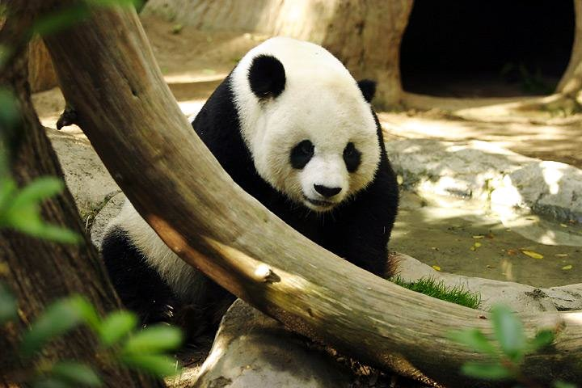

Giant Panda
Tidigare har pandan kategoriserats som halvbjörn, men molekylärgenetiska studier visar att den är en björn.[2] Pandan har svartvit tät päls och väger som vuxen 70–150 kg.
Till skillnad från andra björnar är jättepandan en utpräglad växtätare, som främst äter bambu men kan sällsynt även äta animalier.
Idag förekommer den vilt bara i Kina men tidigare fanns björnen även i andra delar av östra Asien.
Jättepandan är känd som symbol för Världsnaturfonden och var en av fem maskotar för de olympiska sommarspelen 2008 i Peking.
Gåvor i form av pandabjörnar till zoologiska trädgårdar har använts som ett sätt för Folkrepubliken Kina att förbättra sina relationer med stater i Västvärlden.
|
Länk 1 med kort info Här kommer vi att fylla på med info froån Världsnaturfonden. |
- | Länk 2 med kort info | - | Länk 3 med kort info |